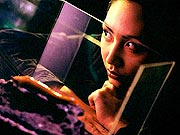
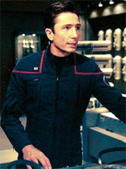
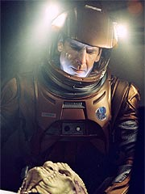
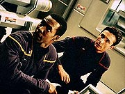
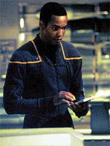
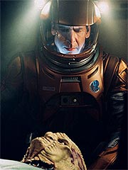
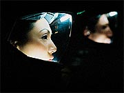

Episódio
anterior | Próximo
episódio
Sinopse:
A Enterprise segue em sua missão de exploração. Enquanto Jonathan
Archer e sua tripulação estão ansiosos para encontrar novas
espécies alienígenas, o oficial de armamentos Malcolm Reed está
aflito para corrigir a calibragem da mira dos torpedos, que já se
mostrou defeituosa no recente confronto da nave com os Sulibans.

Desde a devolução
do Klingon Klaang a seu mundo natal, a única forma de vida com quem
a Enterprise travou contato foi "Sluggo", apelido dado a
uma lesma alienígena que a alferes Hoshi Sato adotou como bichinho
de estimação. Entretanto, nem isso vai indo bem; o animal não se
adaptou à nova vida a bordo e está morrendo aos poucos.
Hoshi está se sentindo tão incomodada na Enterprise quanto Sluggo.
Ela está insegura sobre sua vocação para uma missão
exploratória no espaço profundo. Seus problemas começam nos
níveis mais elementares: a alferes está com dificuldades para
dormir pelo fato de seus alojamentos ficarem do lado contrário ao
que ela estava acostumada. "As estrelas estão indo para o lado
errado", foi o que ela disse, ao protestar junto a Archer. O
capitão autoriza que ela troque de alojamento com o alferes Porter,
uma vez que os dois já estavam de acordo.

Logo
após Malcolm Reed realizar mais um teste, mal-sucedido, com seus
torpedos, quase atingindo um deles na própria Enterprise, T'Pol
detecta em seus sensores a presença de uma nave alienígena à
deriva perto dali. Archer, mais ansioso do que nunca para um
contato, resolve investigar. Após uma tentativa de comunicação, o
capitão decide abordar a nave, para ver se há algo errado. T'Pol
protesta, dizendo que a abordagem poderia ser vista pelos
alienígenas como uma invasão de sua privacidade.
Mesmo assim, Archer decide seguir em frente, e convoca Hoshi Sato e
Malcolm Reed para acompanhá-lo ao cargueiro à deriva. Chegando
lá, os três encontram um cenário desolador: enquanto uma bomba
instalada recentemente processa o que parecem ser fluidos
biológicos, 15 cadáveres estão pendurados sob o teto. Hoshi entra
em estado de choque com a visão aterrorizante, e Archer decide
retornar à Enterprise.
Supondo que os alienígenas que assassinaram aqueles tripulantes
pudessem voltar em breve para buscar os fluidos que estão sendo
armazenados pela bomba, Archer decide abandonar a área, embora
relutante. Durante o jantar, com T'Pol e Tucker, o capitão se
mostra extremamente desconfortável com a atitude covarde de
simplesmente abandonar a nave lá, sem tentar descobrir o que
aconteceu ou avisar outros da espécie que havia sido cruelmente
assassinada.
Em razão disso, Archer decide voltar à nave para investigar o que
está acontecendo e deixar ao menos um sinal automático para que
outros venham para resgatá-la. Incumbida de decifrar a língua
alienígena e preparar a mensagem, Hoshi Sato mais uma vez faz parte
do grupo de abordagem. Junto dela e do capitão, também estão o
dr. Phlox e o engenheiro Tucker. Reed ficou a bordo para continuar
trabalhando na calibragem da mira dos torpedos.

Examinando um dos
cadáveres, Phlox descobre que os alienígenas montaram aquele
sistema hidráulico para extrair triglobulina de seus corpos --uma
substância que tem vários usos, que vão desde vacinas até
afrodisíacos. O médico também lamenta informar que a fisiologia
humana possui uma substância muito parecida. Enquanto isso, Hoshi
consegue criar a mensagem e deixar o transmissor do cargueiro
emitindo-a no automático.
Logo depois, uma outra nave alienígena se aproxima. O padrão
tecnológico dela é o mesmo das tubulações instaladas no
cargueiro --os assassinos estão de volta. Archer e seu grupo voltam
às pressas para a Enterprise, mas não a tempo de conseguir fugir.
A Enterprise passa a ser atacada pelos alienígenas, depois que eles
fazem um rastreio da nave e descobrem que os humanos possuem um
equivalente da triglobulina.
Com tecnologia francamente superior, os alienígenas tornam inútil
qualquer tentativa de reação. Eles possuem armas de partículas e
raios tratores, o que está muito além das capacidades da NX-01. A
Enterprise já está para ser abordada, e Archer ordena que Reed
distribua armas para todos, na tentativa de conter o ataque dentro
da nave. Mas antes que esse curso de ação possa ter
prosseguimento, uma outra nave alienígena se aproxima.
Ao abrir um canal de comunicação, Archer constata que são da
mesma espécie que foi assassinada a bordo do cargueiro. O capitão
ordena que Hoshi Sato transmita uma mensagem, via tradutor
universal, dizendo que a Enterprise não foi responsável pelas
mortes, e sim os alienígenas da nave que estava para abordá-los.
As tentativas de tradução automática falham, e a comunicação
só funciona quando a alferes Sato, pessoalmente, fala com os
alienígenas. Eles decidem ajudar a Enterprise, atacando a outra
nave, que é destruída no processo.

A
Enterprise estabelece boas relações com a espécie
recém-contatada, os Axanar. Segundo Archer, eles têm vida média
de 400 anos e são andróginos. Após o contato diplomático, a nave
retoma seu curso de exploração rumo ao desconhecido, mas não sem
antes fazer uma parada para deixar Sluggo em um ambiente no qual ele
tenha maior chance de sobreviver.
Comentários:
"Fight or Flight" abre muito bem a
temporada regular de Enterprise, injetando o tão falado
sangue novo que o franchise precisava. Por quê? Muito simples: a
história nele contida não poderia ter sido adaptada para nenhuma
das outras séries de Jornada nas Estrelas.
Dois elementos empurram a trama à frente: primeiro, a enorme
deficiência técnica da Enterprise, que, além de não possuir
várias das tecnologias que a fariam imbatível nos séculos
seguintes, não consegue fazer funcionar direito o que ela tem.
Segundo, a total falta de experiência e a ansiedade da tripulação
para encontrar o "desconhecido", mesmo que isso signifique
enfrentar riscos.
Além disso, dois outros ingredientes presentes aqui mostram que
esta série será bem diferente de Voyager. O primeiro deles
é a questão da continuidade, que foi tão pouco considerada no
seriado anterior. Aqui, vemos não só referências a "Broken
Bow", com uma menção aos Sulibans, como também a
continuação direta de algo visto só perifericamente no
episódio-piloto: a total inabilidade de acertar o alvo no disparo
de torpedos.
Em "Broken Bow", quando do
confronto da Enterprise com as naves Sulibans, vemos a NX-01
disparar vários torpedos mas não acertar nenhum dos alvos
inimigos. Aqui, já no começo do episódio, vemos Malcolm Reed
trabalhar furiosamente para corrigir a calibragem de mira dos
torpedos. Essa deficiência mostra sua valia mais adiante no
episódio, quando a nave faz um teste real das modificações e
quase é atingida por um torpedo que ela mesma lançou no processo.
A cena é extremamente bem executada e serve para mostrar o quão
despreparada está a Enterprise para uma missão arriscada no
espaço profundo.

Não menos
despreparados estão seus tripulantes. Hoshi Sato, que é certamente
a mais insegura da equipe, ganha um episódio focado principalmente
nela --a questão que ela precisa resolver é: seu lugar é no
espaço, ao lado do capitão Archer, desvendando novas culturas e
línguas alienígenas, ou ela deveria voltar à Terra e permanecer
como professora universitária?
Neste sentido, a personagem faz uma ponte direta com a audiência
--uma vez que o público geral está tão despreparado para viver as
aventuras da Enterprise quanto a própria oficial de
comunicações--, o que facilita muito seu desenvolvimento. E Linda
Park não deixa por menos, dando vida à personagem com mestria.
Hoshi é muitíssimo bem utilizada aqui, e suas reações servem
bastante para refletir o tom de toda a tripulação e ao mesmo tempo
nos contar mais sobre a personalidade da própria alferes. Nota dez
até aqui para o desenvolvimento de personagens --o que nos leva ao
segundo ingrediente que diferencia Enterprise de sua série
predecessora.
Aparentemente, a nova série será muito mais voltada para os
personagens do que Voyager foi. Além de Hoshi Sato, o
capitão Archer recebe um tratamento especial aqui, refletindo a
nobreza de sentimentos humanos em sua forma mais crua. Archer age
com uma moralidade e uma coragem próximas de seus sucessores dos
séculos 23 e 24, mas ainda não com sua astúcia e a experiência
deles. O resultado é um capitão que não é maior que a vida, como
os demais, mas que é capaz de cometer erros, e dos grandes.
Não fosse pela aparição de uma outra nave Axanar e pelo sucesso
de Hoshi Sato explicando a situação aos alienígenas, a
tripulação da Enterprise já teria virado suco de triglobulina em
sua segunda missão --tudo graças a Archer. Por conta dessas
decisões corretas mas inconsequentes do capitão, T'Pol serve como
um bom contraponto. Com sua experiência Vulcana e sua profunda
lógica, ela sempre aponta o caminho mais seguro. Óbvio que os
ilógicos e desconfiados humanos do século 22 não têm por hábito
seguir seus conselhos, o que faz do relacionamento entre ela e o
capitão dos mais revigorantes.

Ao
contrário do que temiam alguns, T'Pol ainda não está totalmente
integrada à tripulação. Muito ao contrário, Archer e sua equipe
costumam ver sua primeiro-oficial como uma pedra no caminho de sua
missão de exploração. Mesmo assim, o capitão não é bobo e
procura sempre ouvir o que a Vulcana tem a dizer.
O doutor Phlox aparece em uma situação paradoxal neste episódio:
sua atuação é um misto de Guinan com Neelix. Embora os trejeitos
do alienígena estejam ainda um tanto quanto apatetados, lembrando o
Talaxiano, suas tiradas são infinitamente mais inteligentes,
algumas vezes lembrando as sacadas sensacionais da El-Auriana
bartender da Enterprise-D. Especialmente interessantes são os
momentos em que Phlox traça o paralelo entre as dificuldades de
Hoshi a bordo e de seu bichinho Sluggo, ou ainda quando o médico
demonstra sua alegria ao estar numa nave que mais parece um
laboratório fechado para ele estudar o comportamento humano. O
diálogo dele com Tucker no refeitório é dos mais curiosos. O
personagem nesse momento anda pela fronteira entre o fascinante e o
ridículo. Se ele continuar trilhando este caminho, ótimo. Mas
existe um perigo não-desprezível de que ele venha a se tornar um
segundo Neelix. Se isso vai ocorrer ou não, só os próximos
episódios poderão dizer.
Travis Mayweather passa batido nesse episódio, do mesmo modo que em
"Broken Bow". O personagem
está sob risco de se tornar esquecível se os produtores não derem
algo mais importante para ele ao longo da temporada. Até aqui, ele
poderia ser muito bem o "tripulante #2", que ninguém iria
notar a diferença.
Reed e sua mania de explodir coisas continua despertando o
interesse, assim como a ironia de Tucker. Aliás, aqui temos mais um
insight na personalidade do engenheiro, que se mostra mais um
explorador do que um cientista. Ele certamente nunca trocaria uma
licença pela leitura de um manual técnico, como o sr. Scott
costumava fazer na Série Clássica.

Vale dizer que,
apesar do excelente desenvolvimento da premissa da série e da
caracterização de seus personagens principais (à exceção de
Mayweather), "Fight or Flight" está longe de ser
um episódio perfeito. A solução da história é totalmente
clichê, com Sato superando sua insegurança e desatando a falar com
o Axanar para comunicar as intenções pacíficas da Enterprise, e a
destruição da nave alienígena inimiga é totalmente artificial.
Seria muito mais conveniente se os misteriosos assassinos
simplesmente batessem em retirada em vez de serem destruídos por
uma força aparentemente inferior.
Além disso, o episódio demora um pouco a pegar ritmo. Mesmo assim,
é um bom sinal, que demonstra que os roteiristas estão tentando
embasar suas histórias muito mais em diálogos do que na ação
desenfreada e recheada de tecnobaboseira que víamos em Voyager.
Falta só acertar a medida certa entre ritmo, diálogo e ação e
teremos um episódio vencedor. E o bom é que "Fight or
Flight" mostra que potencial para isso certamente não
está faltando.
Citações:
Mayweather - "We
were only off by three meters."
("Erramos por apenas três metros.")
Reed - "'Only three meters.' Three meters could mean the
difference between hitting a weapons port or a warp core. Instead of
disabling a vessel we'd end up destroying it, and probably ourselves
in the process."
("'Apenas três metros.' Três metros podem significar a
diferença entre acertar uma escotilha de armas ou um núcleo de
dobra. Em vez de desabilitar uma nave acabaríamos destruindo-a, e
provavelmente a nós no processo.")
Phlox - "Be not mistaken, they are preparing to mate. Do you
think they will mind if I watch?"
("Não se engane, eles estão se preparando para acasalar.
Você acha que eles se importariam se eu assistisse?")
Tucker - "Maybe we should go have a look."
("Talvez devêssemos ir dar uma olhada.")
T'Pol - "If you insist on allowing your curiosity dictate
your actions..."
("Se você insiste em permitir que sua curiosidade dite suas
ações...")
Archer - "We insist."
("Nós insistimos.")
Hoshi - "I am a translator. I didn't come out here to see
corpses hanging on hooks."
("Eu sou uma tradutora. Não vim aqui fora para ver cadáveres
pendurados em ganchos.")
T'Pol - "We have a code of behavior. And we try to obey
it."
("Nós temos um código de comportamento. E tentamos
obedecê-lo.")
Archer - "You may not believe this, but humans have a code
of behavior too. It took a few thousand years, but I think we're
starting to get it right."
("Você pode não acreditar, mas humanos também têm um
código de comportamento. Levou alguns milhares de anos, mas acho
que estamos começando a acertar.")
Hoshi - "This isn't exactly Spanish we're dealing with here!
I'd been lucky if I get half the vocabulary right..."
("Isso com que estamos lidando aqui não é exatamente
espanhol! Eu teria sorte se peguei metade do vocabulário
direito...")
Trivia:
 A música do episódio ficou a
cargo de Jay Chattaway.
A música do episódio ficou a
cargo de Jay Chattaway.
Esse segmento marca a estréia
dos uniformes de EVA de Enterprise ("Extra-Vehicular Activity",
ou Atividade Extra-Veicular), aquelas famosas roupas de astronauta.
"Fight or Flight" teve cerca de 9,1 milhões de
telespectadores nos EUA, o que representou uma queda de audiência
menor do que a que Voyager teve do primeiro para o segundo
episódio.
Algumas pequenas refilmagens para
esse episódio foram feitas várias semanas depois de sua filmagem
original ser concluída.
Linda Park disse sobre o
episódio: "[A alferes Sato] decide que na verdade ela não é
feita para o espaço. Ela considera dizer ao capitão que quer
voltar à universidade. Há muito que acontece durante esse
episódio. É um ponto de virada muito legal bem no começo da
série em que ela finalmente pode aceitar o espaço. Ela tem de
engolir seu medo e se forçar a crescer. O diretor foi incrível,
Allan Kroeker. As pessoas vão gostar muito. E tem algumas coisas
realmente assustadoras neste episódio."
John Billingsley também comentou
o episódio. "Há uma nave alienígena abandonada que não
responde nossos chamados, e nós a abordamos para descobrir que a
tripulação foi assassinada. Não sabemos por quem, como e por
quê. E, claro, comigo tendo toda essa maquiagem, tirar e colocar o
capacete não foi nenhum processo fácil. Eu tirava minhas orelhas
falsas junto com ele! Então eles tiveram que planejar as filmagens
de um modo que eu não precisasse estar com e sem capacete. Eles
não perceberam quando projetaram a maquiagem o quanto aquele
episódio particular iria mexer com as necessidades da missão
deles."
Os alienígenas assassinados são os Axanar, cidadãos do planeta de
mesmo nome que James T. Kirk visitaria no século 23 (conforme
relatado no episódio clássico "Whom Gods Destroy").
Foi provavelmente nessa viagem que ele ganhou a "Folha da Palma
de Axanar" (o prêmio consta de eu currículo em "Court-Martial")
As máscaras dos Axanar foram, como de costume, desenvolvidas por
Michael Westmore.
Além da referência clássica aos Axanar, o episódio também
menciona os Nausicaanos, nas palavras do doutor Phlox. Esses
alienígenas só surgiram no universo de Jornada durante A
Nova Geração, mas a data do primeiro contato dessa raça com
humanos nunca foi estabelecida.
Ficha
técnica: